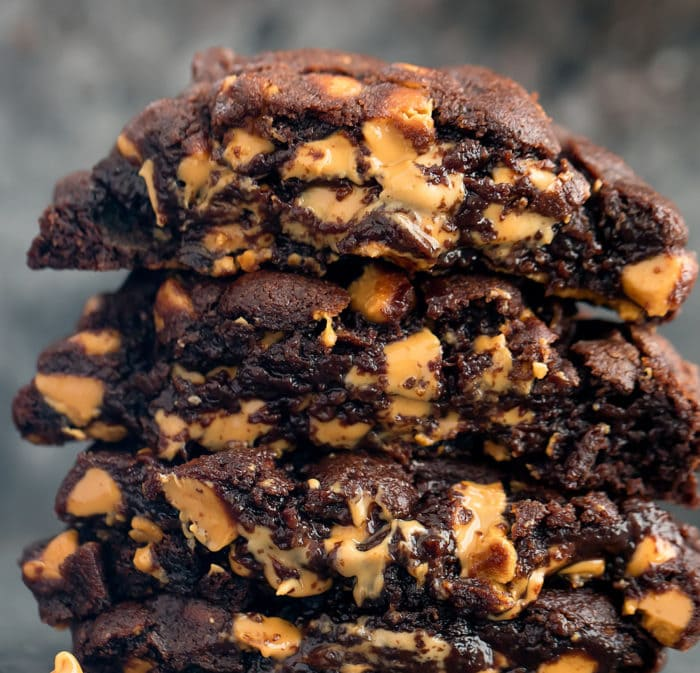

Chocolate Peanut Butter Cookies

Thick, rich, and chewy, these copy-cat chocolate peanut butter chip cookies will have you thinking you're sitting on West 74th Street at the popular New York City bakery.
This easy recipe can be made in 45 minutes!
Ingredients
- 1 1/2 Cups All-Purpose Flour
- 2/3 Cup Cake Flour
- 3/4 Cup Dark Cocoa Powder
- 1 Teaspoon Baking Soda
- 1/2 Teaspoon Baking Powder
- 1 Teaspoon Fine Sea Salt
- 14 Tablespoons Cold Unsalted Butter Cut into Cubes
- 1/4 Cup Granulated Sugar
- 1 Cup Light Brown Sugar
- 1 Large Room Temp eggs
- 1 Large Egg Yolk
- 1 2/3 Cups Reese's Peanut Butter Chips
Instructions
- Preheat oven to 375ºF
- In a medium bowl, whisk together the flours, cocoa powder, baking soda, baking powder and salt
- In a mixer, beat the butter, granulated sugar, and brown sugar until light and fluffy ~2 minutes
- Add the egg and egg yolk and mix until combined, then gradually beat in the dry ingredient mixture
- Stir in the peanut butter chips
- Wrap the completed dough and chill for 1 hour
- Divide the dough into 5.75 oz sized balls using a large cookie scoop and drop 4 cookie balls onto a baking sheet
- Bake for 10 minutes
- Cool for 10 minutes and serve while still warm
- Enjoy!
References
Back to Home